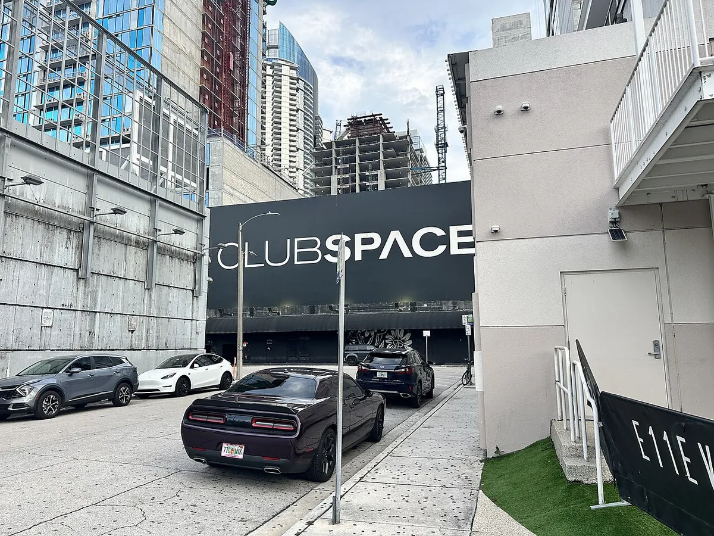
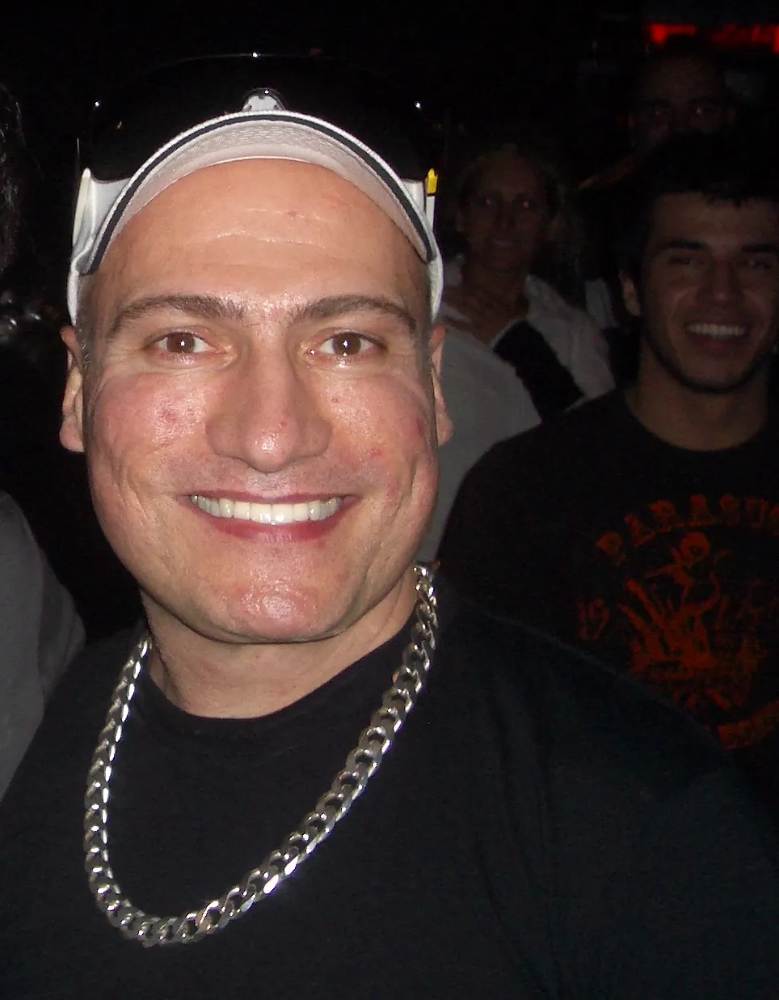
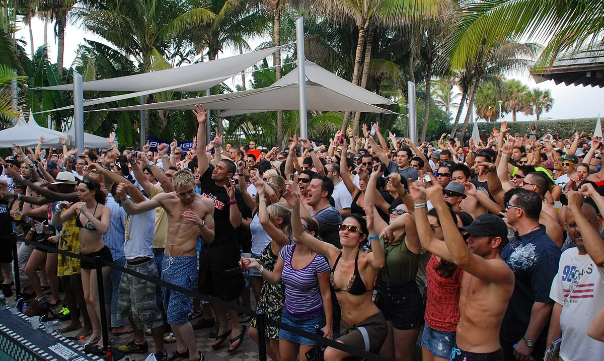
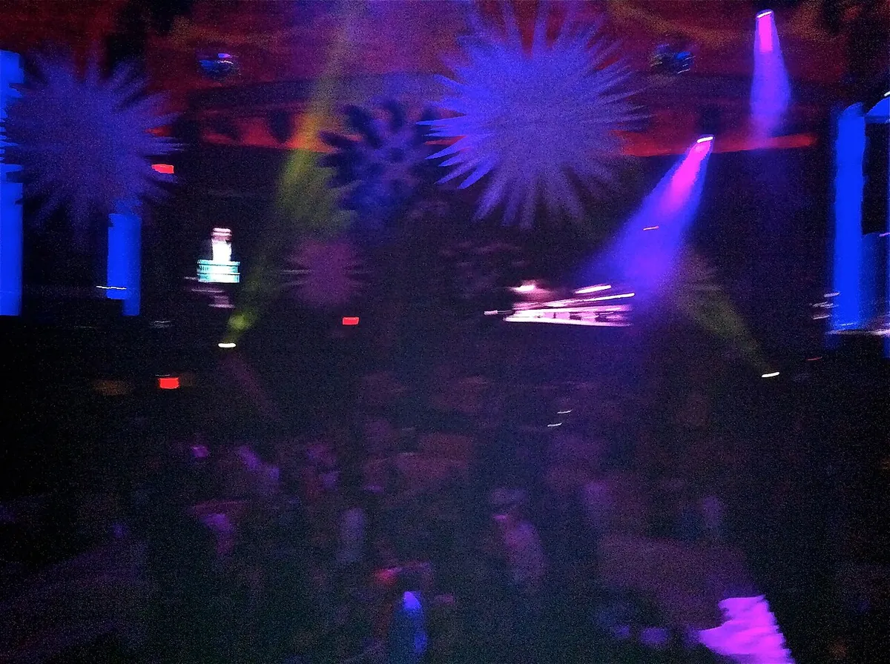
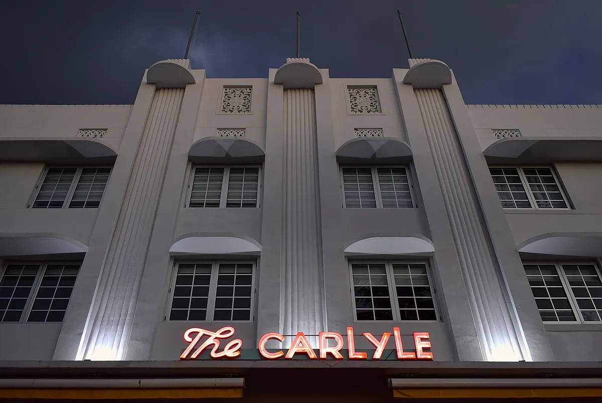

Miami clubs
The best clubs in Miami, from the Terrace at Club Space to Do Not Sit
Miami is famous for bottle service. The clubs where the music is the point are fewer, and they are the reason DJs come back every March.
Plan your visit
Where to go out in Miami.
The nights split between two areas. Park West, in Downtown, has Club Space, Floyd and E11EVEN, and Jolene and MODE are elsewhere in Downtown. Across the bay on Miami Beach, South Beach has M2, Do Not Sit On The Furniture, Twist and Medium Cool, a basement vinyl bar, while LIV is at the Fontainebleau. Domicile is in Allapattah, and Factory Town is out in Hialeah.
Miami nightlife runs late. Space and E11EVEN are open around the clock, and bars such as Blackbird Ordinary in Brickell stay open until 5am, so a night that starts at midnight can end at breakfast. Check each club's ticket page before going: covers, age limits (some Domicile nights are 18 and over, others 21) and dress codes vary by night.
Clubs built around the sound.
Search for Miami clubs and most of what comes back is bottle service: LIV at the Fontainebleau, E11EVEN downtown, a table minimum and a dress code. Those rooms are part of the city, and they are covered further down. The other kind of night happens in the Miami nightclubs where the booking and the sound system are the reason to go.
Miami has more of those than its reputation suggests. It has hosted the Winter Music Conference every March since the 1980s, it is where Ultra started, and it has a club whose Terrace is still full of people dancing at half past six on a Sunday morning.
Club Space and the Terrace.
Club Space opened in March 2000, started by Louis Puig, a Miami local. Danny Tenaglia played the opening night, and once he had, other DJs called the club asking to play. For its first three years Space opened only on Saturdays, with two rooms: a Red Room for house and a Blue Room for trance.

What made it different was the licence. Space can serve until morning, around the clock, so a night there does not end when the rest of the city closes. The Terrace, the club's outdoor upper floor, is where that shows. Sunday morning on the Terrace, with daylight coming through and the room still full, is the thing most people mean when they talk about Space. The Terrace now has a retractable transparent roof, so the weather no longer ends a party.
The club changed hands several times. Puig sold it in late 2013. In late 2016 three local promoters, Coloma Kaboomsky, Davide Danese and David Sinopoli, took over; their company, Link Miami Rebels, still runs it. Sinopoli also co-founded the III Points festival. Insomniac, the company behind EDC, bought a stake in 2019. In 2024 Space closed from May to October for renovation while E11EVEN built its towers on either side.
Today it holds about 2,000 across three rooms: the Terrace, the Ground, a darker room underneath for techno and live acts, and Floyd. DJ Mag placed it at number 14 in its Top 100 Clubs for 2026. Its long closing parties are an event in themselves: the Martinez Brothers played the 32-hour closing party in 2019.
Danny Tenaglia and the Miami sound.
Tenaglia's link to the city goes back before Space. He left New York in 1985 and started DJing in Miami as a resident at a club called Cheers, playing New York and Chicago house, before going back to New York five years later and building his name at Twilo and Tunnel.

He came back to open Space in 2000. This set was recorded for Boiler Room in Miami in 2017.
The Winter Music Conference and Miami Music Week.
The reason so many DJs know Miami is March. The Winter Music Conference was founded in 1985 by Louis Possenti and Bill Kelly, and the first edition was held in February 1986 at a Fort Lauderdale hotel with about 80 people from the dance music industry. It moved south to Miami Beach and Downtown Miami and grew into a week of panels by day and parties by night, with up to an estimated 100,000 people. The Ultra Music Festival began as part of it in 1999.

Miami Music Week started in 2011 and now runs the club side of that week: in 2015 it counted more than 1,000 artists at more than 260 events, in clubs, hotel pools, boats and pop-up venues across Wynwood, Downtown, Miami Beach and Little Haiti. It ends with Ultra in Bayfront Park. In 2018 Ultra bought the Winter Music Conference.
For a clubber, the last week of March is the busiest of the year. Clubs book their biggest names that week and covers rise: Time Out warns that the cover at Do Not Sit On The Furniture goes up during Miami Music Week.
The best clubs in Miami now.
Time Out's list of the best nightclubs in Miami puts Club Space first, then E11EVEN, M2, Do Not Sit On The Furniture and LIV. The table keeps to the rooms that book house, techno and their neighbours.
| Club | Area | Music and character | Best for |
|---|---|---|---|
| Club SpaceGoogle MapsResident Advisor | Park West, Downtown | Three rooms, about 2,000, open around the clock, since 2000 | Sunrise on the Terrace, touring house and techno |
| FloydGoogle MapsResident Advisor | Park West, Downtown | A small red room inside the Club Space building | House and techno, separate tickets |
| Jolene Sound RoomGoogle MapsResident Advisor | Downtown | A hi-fi basement in a 90-year-old building | Disco and house |
| Do Not Sit On The FurnitureGoogle MapsResident Advisor | South Beach | A small club off Lincoln Road, opened by Behrouz | Deep and melodic house |
| M2Google MapsResident Advisor | South Beach | A 35,000-square-foot former theatre, run by Ultra Worldwide | Big techno on Resistance nights |
| DomicileGoogle MapsResident Advisor | Allapattah | A black-walled club, opened around 2023 | Hard techno and trance |
| MODE DowntownGoogle MapsResident Advisor | Downtown | A two-storey club with a basement dancefloor | Afro-house, electro and Detroit techno |
Floyd is a small room inside the Club Space building, sold on separate tickets. It is red, dark and intimate, and books house and techno with occasional jazz and reggaeton nights. Jolene Sound Room is also part of the Club Space family: a disco and house room in the basement of a 90-year-old Downtown building, small, with a hi-fi system and DJs such as Theo Parrish and Soulclap.
M2 has the longest history of any room on the list. The building on South Beach was a vaudeville theatre, then a run of clubs, Mansion among them, and Prince owned it in the 1990s. Ultra Worldwide reopened it as a 35,000-square-foot club with a big lighting rig. For techno, follow its Resistance nights; on other nights the music can be anything.
Domicile opened around 2023 in a Little Haiti warehouse for hard techno and trance, and has since moved to Allapattah. MODE, Downtown, is a two-storey club with a basement for Afro-house, electro and Detroit techno. Mad Radio, a lounge inside a retro motel, has DJs from 9pm playing deep house, disco and minimal, and weeknights are often free.
Miami house music clubs.
Do Not Sit On The Furniture is the house club on this list. It is just off Lincoln Road in South Beach, it was opened by the DJ and producer Behrouz, and the room is small. 6AM described it as a club without the bells and whistles of VIP, and Time Out puts the usual cover at $10 to $30, higher during Miami Music Week. The bookings lean toward deep and melodic house, from labels such as Anjunadeep, Crosstown Rebels and All Day I Dream.
Twist, on South Beach, is Miami's big gay club: two levels, three dancefloors and no cover. It is the unofficial afterparty of Miami Beach Pride.
Miami techno clubs and EDM rooms.
Of the techno clubs Miami has, Space's Terrace and the Ground take the touring names, and Domicile takes the harder end. Factory Town in Hialeah, run with the same Link Miami Rebels team, is a venue rather than a club, and it hosts big techno nights: Drumcode recorded Adam Beyer there.
The EDM clubs Miami is known for are LIV and E11EVEN. LIV opened in 2008 inside the Fontainebleau on Miami Beach. Its name is the Roman numeral 54, for the year the hotel opened and as a nod to Studio 54. Its Sunday night, LIV on Sunday, has been the city's hip-hop party since 2009, and big-room DJs play the other nights.

E11EVEN opened in February 2014, near Club Space, and calls itself an ultraclub. It is open 24 hours, with a stage in the middle of the dancefloor, aerialists and performers. In 2025 the International Nightlife Association named it the best nightclub in the United States. Both clubs are about tables and spectacle more than the music. Time Out warns that the queue at LIV gets long quickly, and recommends a table reservation at E11EVEN.
Hear Miami before you go.

For the festival in March, the Ultra guide covers Bayfront Park. For other cities, the NYC clubs guide and the Chicago clubs guide cover the rooms where house began, and the best nightclubs in the world puts Space next to them.
Miami clubs FAQ.
What are the best clubs in Miami?
For house and techno, Club Space, Floyd, Jolene Sound Room, Do Not Sit On The Furniture, M2 and Domicile. For a big night with tables, LIV and E11EVEN.
What is the hottest club in Miami?
Club Space. Time Out puts it first on its list of the best clubs in Miami, DJ Mag ranked it 14th in the world in 2026, and its Sunday mornings on the Terrace are the night people travel for.
What is the most famous club in Miami?
Club Space for dance music, open since 2000. For celebrity and bottle service, LIV at the Fontainebleau, open since 2008, and E11EVEN, open since 2014.
What is the best EDM club in Miami?
For big-room DJs, LIV and E11EVEN. For house and techno, Club Space, and M2 on its Ultra-run Resistance nights.
What is the hardest club to get into in Miami?
LIV and E11EVEN. Time Out warns that the queue at LIV gets long quickly and that late entry can cost extra, and recommends a table reservation at E11EVEN. The music-first clubs sell tickets in advance.
What time do clubs close in Miami?
It depends on the club. Club Space and E11EVEN are open around the clock, and many bars stay open until 5am.
When is Miami Music Week?
The last week of March, ending with Ultra in Bayfront Park. It is the busiest week of the year for every club in the city.
Sources.
Continue reading
Read next.
 Rave spots~8 min read
Rave spots~8 min readBerghain: Panorama Bar, Sound and Residents
Berghain explained: the former power station, Panorama Bar upstairs, Halle am Berghain, the Kantine, and the Ostgut Ton label.
Read article → Rave spots~8 min read
Rave spots~8 min readBest Clubs in Los Angeles: Nightclubs for House and Techno
Avalon Hollywood, Exchange LA, Academy LA, Sound, Lot 613 and Catch One: the best clubs in Los Angeles for house and techno.
Read article → Rave spots~8 min read
Rave spots~8 min readBest Clubs in Chicago: Nightclubs for House and Techno
Smart Bar, Podlasie, Spybar, Sound-Bar, Le Nocturne and Radius: the best clubs in Chicago for house and techno, and the Warehouse where house began.
Read article → Rave spots~11 min read
Rave spots~11 min readBest Clubs in NYC: Nightclubs for House and Techno
Nowadays, Basement, Public Records, Good Room and Elsewhere: the best clubs in NYC for house and techno now, and the history from the Loft to Output.
Read article →Want something to play while you read? Let the Selector pick a DJ set.